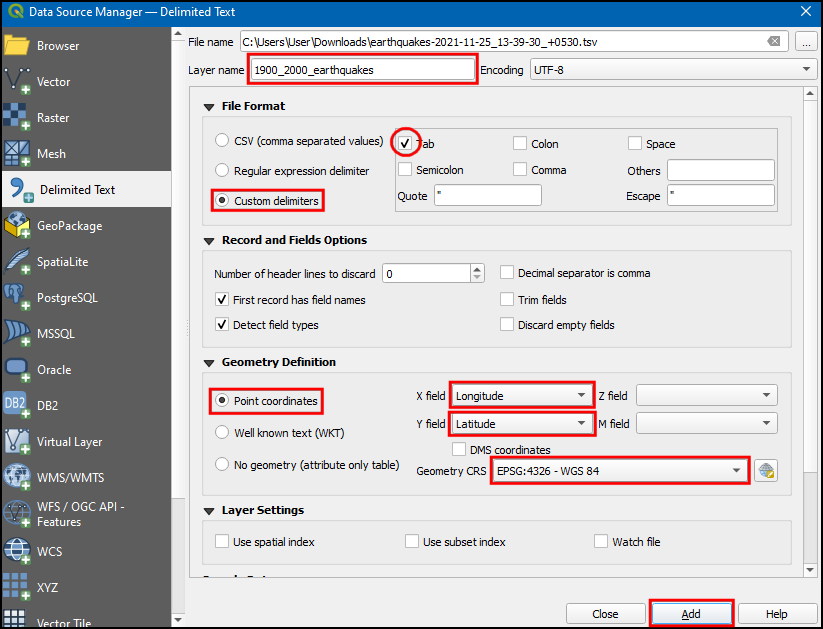

Importar Hojas de Cálculo o archivos CSV (QGIS3)¶
Muchas veces los datos del SIG vienen en una tabla o en una hoja de cálculo. QGIS permite importar archivos de texto estructurado con coordenadas como una capa vectorial. Este tutorial muestra cómo se puede utilizar el Administrador de fuentes de datos para importar archivos de Texto delimitado.
Vista general de la tarea¶
Importaremos a QGIS un archivo de texto con las localizaciones de los terremotos en formato de valores separados por tabulaciones (TSV) y crearemos una capa de puntos.
Obtener los datos¶
Para este tutorial vamos a descargar un conjunto de datos de terremotos entre 1900-2000 del Centro Nacional de Datos Geofísicos de la NOAA, que produce un gran conjunto de datos de todos los terremotos importantes desde el año 2150 a.C. Visite el portal del NCEI de la NOAA e introduzca Min como
1900y Max como2000. Esto devolverá todos los incidentes sísmicos ocurridos y registrados por la NOAA entre esos años. Para otros resultados específicos, puede filtrar con diferentes parámetros. Haga clic en Búsqueda.

As a result, we got 2594 earthquake incidents. Click on the Download TSV icon.

Para mayor comodidad, puede descargar directamente una copia de los conjuntos de datos mencionados en el siguiente enlace:
earthquakes-2023-09-12_17-19-15_+0530.tsv
Fuente de Datos [NCEI]
Procedimiento¶
Examine su fuente de datos tabulares. La base de datos de terremotos descargada contiene los campos
LatitudyLongitudque indican la ubicación del epicentro del terremoto y otros atributos relacionados. Utilizaremos estos campos para importar el archivo como una capa de puntos. Abra los datos en un editor de texto como Notepad/TextMate para ver el contenido. Verá que una TAB separa cada campo.

Nota
Si tiene una hoja de cálculo, utilice la función Guardar como de su programa para guardarla como un Archivo delimitado por tabulaciones o un Archivo de valores separados por comas (CSV).
QGIS dispone de un gestor de datos unificado que permite cargar todos los formatos de datos soportados. Haga clic en el botón Abrir administrador de fuentes de datos de la Barra de herramientas de fuentes de datos. También puede utilizar el atajo de teclado Ctrl + L.
En el cuadro de diálogo Administrador de Fuentes de Datos, cambie a la pestaña Texto delimitado. Haga clic en el botón … situado junto al Nombre de archivo.

Dependiendo del sistema operativo, puede o no ver el archivo en la ubicación descargada. En Formatos de archivo, cambie a
Todos los archivos (*; *.*)para ver el archivo tsv.

Ahora verá el archivo descargado. Selecciónelo y haga clic en Abrir.

En el cuadro de diálogo Administrador de Fuentes de Datos, la ruta del archivo estará disponible en Nombre de archivo. Cambie el Nombre de la capa por
1900_2000_terremotos. En la sección Formato de archivo, seleccione Delimitadores personalizados y marqueTab. En la sección Definición de geometría, seleccione Coordenadas de punto. Por defecto, los valores de Campo X y Campo Y se rellenarán automáticamente si se encuentra un campo de nombre adecuado en la entrada. En nuestro caso, sonLongitudyLatitud. Puedes cambiarlo si la importación selecciona los campos equivocados. Puede dejar la etiqueta SRC Geometría en el SRC por defectoEPSG:4326 - WGS 84. Si su archivo contiene coordenadas en un SRC diferente, puede seleccionar el SRC apropiado aquí. Haga clic en Añadir.
Nota
Es fácil confundir las coordenadas X e Y. La latitud especifica la posición norte-sur de un punto y, por tanto, es una coordenada Y. Del mismo modo, la longitud especifica la posición este-oeste de un punto y es una coordenada X.
Ahora verá que los datos serán importados y mostrados en el lienzo de QGIS como una nueva capa llamada
1900_2000_earthquakescon SRCEPSG:4326.

If you want to give feedback or share your experience with this tutorial, please comment below. (requires GitHub account)